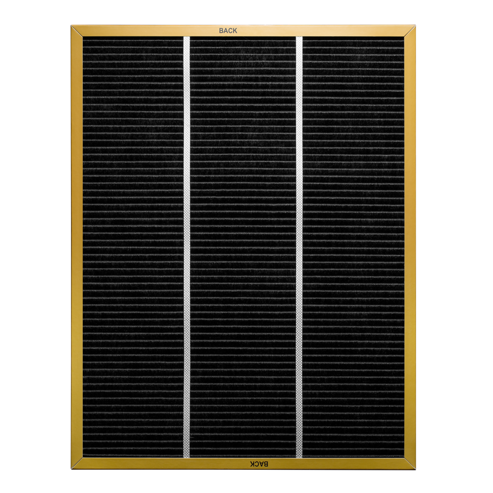

Фильтр PLATINUM CATALISIS AS ACPC 3004 FP
Уникальная разработка, актуальная для очищения воздуха после переезда, ремонта и обновления интерьера.
Platinum catalisis
Антиформальдегидный фильтр.
Радость от переезда в новый дом или новую квартиру, ремонт или покупка новой мебели - всё отходит на второй план после резкого ухудшения самочувствия. Это связано с превышением нормы содержания в воздухе формальдегида, который выделяется из новых стен, потолков, мебели, различных искусственных покрытий, лаков и красок. Формальдегид является чрезвычайно канцерогенным летучим органическим соединением, который, в зависимости от концентрации, может приводить к различному спектру недугов – от мигреней до онкологических заболеваний. Новый специальный фильтр PLATINUM CATALYSIS, разработанный компанией BORK, позволяет снизить концентрацию формальдегида до уровня, неопасного для человека.
Фильтр Platinum Catalysis использует процесс платинового (холодного) катализа –химической реакции, результатом которой является нарушения структуры формальдегида ифенола. При этом в отличие от процесса фотокатализа не образуется озон, чрезвычайно вредный для человека. Платина, особенно в мелкодисперсном состоянии, является очень активным катализатором многих химических реакций. В фильтре Platinum Catalysis используется пропитка на основе платинового порошка, которая не только создает условия, при которых стабильные молекулы формальдегида способны вступить в реакцию с молекулами кислорода, находящихся в воздухе, но и многократно ускоряет протекание химической реакции.
Идеальная атмосфера в вашем доме
Специальный фильтр снижает концентрацию формальдегида в воздухе, выделяющегося из новых стен, мебели и различных искусственных покрытий. Система со сроком полезного действия 6 месяцев предназначена для воздухоочистителей A500, A501, A700, A704и A800.